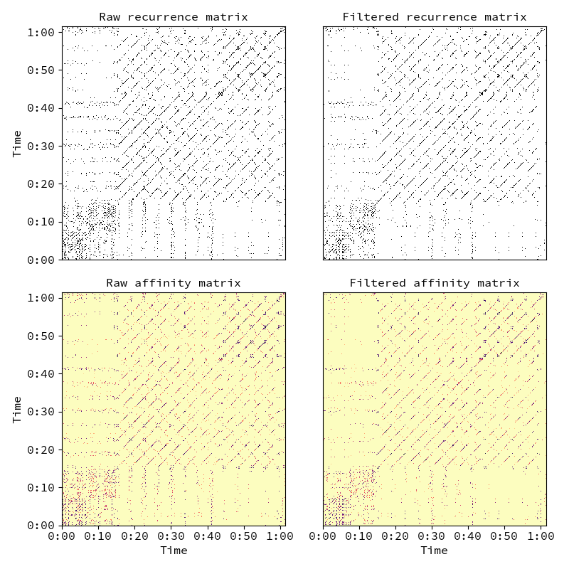

librosa.segment.timelag_filter¶
-
librosa.segment.timelag_filter(function, pad=True, index=0)[source]¶ Filtering in the time-lag domain.
This is primarily useful for adapting image filters to operate on
recurrence_to_lagoutput.Using
timelag_filteris equivalent to the following sequence of operations:>>> data_tl = librosa.segment.recurrence_to_lag(data) >>> data_filtered_tl = function(data_tl) >>> data_filtered = librosa.segment.lag_to_recurrence(data_filtered_tl)
Parameters: function : callable
The filtering function to wrap, e.g.,
scipy.ndimage.median_filterpad : bool
Whether to zero-pad the structure feature matrix
index : int >= 0
If function accepts input data as a positional argument, it should be indexed by index
Returns: wrapped_function : callable
A new filter function which applies in time-lag space rather than time-time space.
Examples
Apply a 5-bin median filter to the diagonal of a recurrence matrix
>>> y, sr = librosa.load(librosa.util.example_audio_file()) >>> chroma = librosa.feature.chroma_cqt(y=y, sr=sr) >>> rec = librosa.segment.recurrence_matrix(chroma) >>> from scipy.ndimage import median_filter >>> diagonal_median = librosa.segment.timelag_filter(median_filter) >>> rec_filtered = diagonal_median(rec, size=(1, 3), mode='mirror')
Or with affinity weights
>>> rec_aff = librosa.segment.recurrence_matrix(chroma, mode='affinity') >>> rec_aff_fil = diagonal_median(rec_aff, size=(1, 3), mode='mirror')
>>> import matplotlib.pyplot as plt >>> plt.figure(figsize=(8,8)) >>> plt.subplot(2, 2, 1) >>> librosa.display.specshow(rec, y_axis='time') >>> plt.title('Raw recurrence matrix') >>> plt.subplot(2, 2, 2) >>> librosa.display.specshow(rec_filtered) >>> plt.title('Filtered recurrence matrix') >>> plt.subplot(2, 2, 3) >>> librosa.display.specshow(rec_aff, x_axis='time', y_axis='time', ... cmap='magma_r') >>> plt.title('Raw affinity matrix') >>> plt.subplot(2, 2, 4) >>> librosa.display.specshow(rec_aff_fil, x_axis='time', ... cmap='magma_r') >>> plt.title('Filtered affinity matrix') >>> plt.tight_layout()
